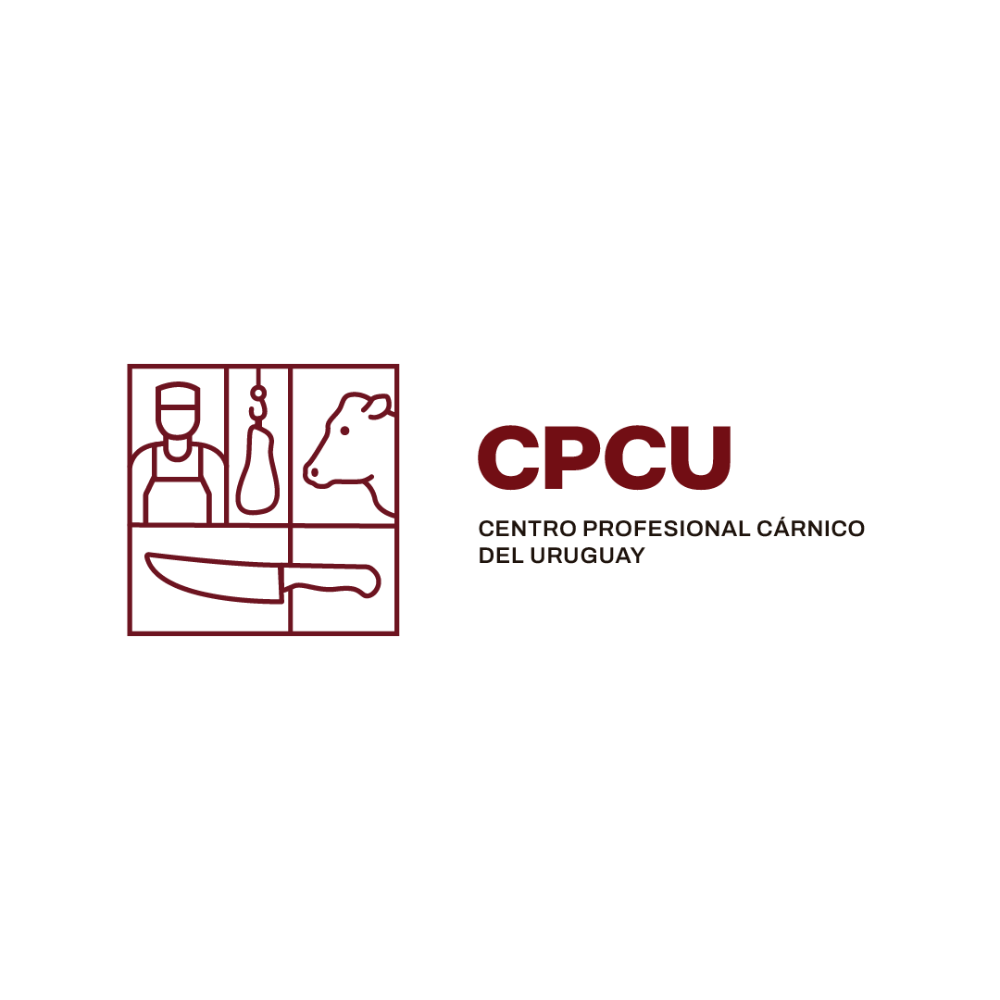

Inscripciones abiertasInscripciones hasta el 18 de agostoFormación 100% gratuitaCupos limitados · 20 a 25 lugaresFormación dual · práctica remunerada en empresa
Inscripciones abiertasInscripciones hasta el 18 de agostoFormación 100% gratuitaCupos limitados · 20 a 25 lugaresFormación dual · práctica remunerada en empresa

Imagen · alumnos + docentes
01 — CPCU
Mucho más que aprender un oficio.
CPCU nace con el objetivo de profesionalizar y fortalecer el trabajo dentro del sector cárnico a través de formación técnica, práctica y especializada.
Creamos espacios de capacitación donde el conocimiento, la experiencia y la práctica se combinan para preparar profesionales capaces de desarrollarse dentro de una industria en constante evolución.
El conocimiento transforma el oficio.
Formar mejores profesionales también significa construir una industria más preparada, eficiente y capacitada.
02 — Capacitaciones
Formación abierta
Imagen · aprendiz de carnicería
Inscripciones abiertas
Aprendiz de Carnicería
Formate como carnicero profesional. Sin costo para vos y con práctica remunerada en Supermercados El Dorado.
Un itinerario que integra formación en aula y práctica intensiva en empresa, con progresión pedagógica de la observación a la autonomía y evaluación conjunta entre el referente educativo y el tutor de empresa.
Roles y responsabilidades de la modalidad dual, cultura de trabajo, seguridad personal y acuerdos de convivencia.
02
Sector cárnico y punto de venta
Cadena cárnica y rol del eslabón comercial, calidad comercial y nociones de trazabilidad y registro por lotes.
03
Inocuidad, higiene y manipulación
Buenas prácticas de higiene, prevención de contaminación cruzada y control de temperaturas, tiempos y almacenamiento.
04
Técnicas iniciales y herramientas
Identificación de cortes y porcionado, uso seguro de cuchillos y chaira, afilado, ergonomía y control visual de calidad.
05
Elaboraciones y valor agregado
Preparaciones simples bajo receta estándar, control de rotación, rotulado interno e higiene de equipos y superficies.
06
Punto de venta y atención al cliente
Exhibición en vitrina, reposición, FIFO/FEFO, comunicación con clientes y presentación del puesto.
07
Competencias transversales
Trabajo en equipo, comunicación, responsabilidad y pensamiento crítico aplicado al control del proceso.
En empresa
Práctica formativa
Recepción, preparación, exhibición y venta con progresión de observación a autonomía y evaluación conjunta.
Ediciones anteriores
Tocá una edición para ampliar
Espacio para próximas ediciones
Espacio para próximas ediciones
Espacio para próximas ediciones
03 — Metodología
Aprender haciendo.
Formación dual que alterna aula y empresa. Cada concepto se demuestra, se practica en el puesto real y se corrige con retroalimentación constante — del «ver hacer» al «hacer con autonomía».
01
Conocimiento
Comprender los productos, herramientas, procesos y fundamentos del oficio.
02
Técnica
Aprender procedimientos y desarrollar precisión en cada etapa del trabajo.
03
Práctica
Aplicar lo aprendido en situaciones reales acompañados por profesionales.
Alternancia aula–empresa · 6 meses
Mes 1
Integración e inducción
Higiene, inocuidad y seguridad. Observación y familiarización en el puesto de trabajo.
Meses 2–5
Práctica supervisada
Técnicas, elaboraciones, vitrina y atención al cliente. Evaluación de desempeño intermedia.
Mes 6
Autonomía e inserción
Autonomía progresiva, evaluación final conjunta y plan de inserción laboral.
04 — Profesionalización
Un oficio que también se estudia.
La industria cárnica evoluciona constantemente. Nuevas técnicas, procesos, herramientas y estándares requieren profesionales cada vez más capacitados.
En CPCU buscamos acompañar esa transformación a través de formación especializada.
Imagen · herramientas + enseñanza
Formación para cada etapa profesional.
A
Personas que quieren aprender el oficio.
B
Trabajadores que quieren mejorar sus habilidades.
C
Carnicerías que buscan capacitar a sus equipos.
D
Empresas del sector que necesitan formación especializada.
05 — Instalaciones
Un espacio diseñado para aprender trabajando.
Imagen · sala de práctica
Equipamiento
Herramientas
Imagen · docentes especializados
06 — Docentes
Aprendé de quienes conocen el oficio.
Referente educativo
Acompañamiento y seguimiento
Formación
Docente con formación pedagógica y experiencia en formación dual. Coordina el vínculo entre aula, empresa y evaluación.
Tutor de empresa
Práctica en el puesto
Formación
Carnicero profesional a cargo del punto de venta. Guía la práctica diaria y evalúa el desempeño en el lugar de trabajo.
Co-tutor técnico
Especialista carnicero
Formación
Instructor carnicero certificado, especializado en técnicas de corte, elaboraciones e inocuidad alimentaria.
El próximo paso en tu formación empieza acá.
Conocé nuestras próximas capacitaciones y encontrá la formación que mejor se adapte a vos.